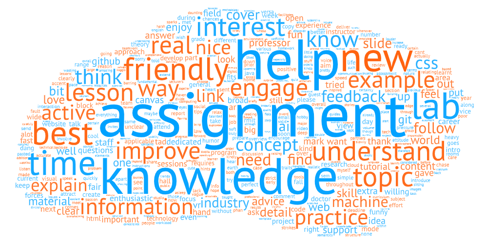

teaching

- Ph.D. Candidates
- Undergraduate Students
- The Business School (2021 – present)
- School of Science, Engineering, and Technology (2018 – 2021)
- School of Business IT and Logistics (2014 – 2017)
Ph.D. Candidates
| Full name | Program | Thesis title | Progress | Supervisors |
|---|---|---|---|---|
| Hien Nguyen Thi Thu | DR204 Doctor of Philosophy (Management) | Digital transformation and digitalisation of healthcare in Vietnam | In Progress | Duy Dang-Pham (Primary), Ai-Phuong Hoang (Associate), Karlheinz Kautz (Primary) |
| Diem-Trang Vo | Doctor of Philosophy (Business) | Co-Creating Values with Customers through AI-Powered Branded App: the Mediating Role of Perceived Authenticity | In Progress | Long Nguyen Van Thang (Primary), Duy Dang-Pham (Primary), Ai-Phuong Hoang (Associate) |
| Khanh-Linh Nguyen | Doctor of Philosophy (Business) | The nexus between psychological attributes and workplace learning – a sequential-mediation model in Vietnam’s banking and retail industries | In Progress | Duy Dang-Pham (Primary), Seng Kok (Primary), Burkhard Schrage (Associate) |
| Anna Felipe | Doctor of Philosophy (Computer Science) | Converging Computer Science and Engineering pedagogy to Achieve Creative Mindset of Student for Start-up (tentative title) | In Progress | James Harland (Primary), Duy Dang-Pham (Associate), Edouard Amouroux (Associate) |
| Minh Hoang Thi Bui | Doctor of Philosophy (Management) | Effects of Student Interaction on Dropout Intention in Online Learning Degree Programs at Higher Education Institutions | Completed (2023) | Mathews Nkhoma (Primary), Duy Dang-Pham (Primary), Ai-Phuong Hoang (Associate) |
| Qui Nguyen Ngoc | Doctor of Philosophy (Management) | The impact of faculty job satisfaction on retention and performance in Vietnam higher education sector | Completed (2023) | Robert McClelland (Primary), Duy Dang-Pham (Associate), Susan Thomas (Associate), Majo George (Associate) |
| Ngan Tuyet Truong | Doctor of Philosophy (Management) | Service Innovation Management for Customer Satisfaction and Behavioural Intentions: The Case of Boutique Hotel Sector in an Emerging Country | Completed (2022) | Mathews Nkhoma (Primary), Robert McClelland (Associate), Duy Dang-Pham (Associate) |
Undergraduate Capstone Project Supervision
BH120 - Bachelor of Engineering (Software Engineering) (Honours)
BP162 - Bachelor of Information Technology
| Full name | Program | Capstone project | Year | Industry partner |
|---|---|---|---|---|
| Thanh Nguyen Tan, Dong Nguyen Dong, Phi Tran, An Nguyen Le | BH120 | LinkedIn scraper and recommender | 2020 | Navigos Group |
| Hinh Dinh Nguyen Huy, Tu Nguyen Hoang Cam, Hieu Nguyen Trung, Huy Hoang | BH120 BP162 | Real estate auto-listing web application | 2020 | Amberos |
| Thanh Phu Gia | BH120 | An online tool for automatic data preprocessing | 2020 | |
| Long Nguyen Hoang | BH120 | Implementation of graph theory and gamification in knowledge management system | 2020 | |
| Tuan Phung Minh, Long Tran Hoang | BH120 | An accurate pipeline approach to Vietnamese handwritten medical record recognition | 2020 | Oxford University Clinical Research Unit (OUCRU) - Hospital for Tropical Diseases |
| Huy Tran Nguyen Duc | BH120 | Music recommender system with audio features | 2019 | |
| Dat Le Duy, Duy Doan Le, Quang Tran Huu | BH120 | HERMESITO - A job recommender system | 2019 | Navigos Group |
The Business School (2021 – present)
INTE2555 Technology Futures (Postgraduate / MBA)
This course develops your skills in evaluating current and emerging technology trends and evaluating the potential impacts on, and opportunities for, businesses considering integrated future technologies. You will explore developments in technologies including the evolution of a technology, the characteristics of a technology and its implications on managerial functions. You will also evaluate how technological changes affect stakeholder management and their ethical implications, and how to respond to business challenges by developing solutions to meet business objectives arising from emerging technologies.
MKTG1418 Marketing Intelligence
This course covers the fundamentals of a topic area whose importance is growing rapidly in the current marketing environment. You will explore the nature and scope of marketing research. You will master the latest market research tools and learn to select the appropriate methodologies to conduct market research. You will learn to use the data gathered to get insights into your market, product, audience, competition. You will also learn to report the information in a fashion that facilitates generating a cohesive view of the company’s market situation and therefore enhances decision making.
COMM2789 Digital Content Creation
Digital content plays a crucial role in a successful digital marketing campaign. This course provides skills for developing a content strategy and measuring its success, adapting messages and stories for different audiences, integrating text, images and audio-visual materials, and writing, editing and delivering interesting content to attract and engage audiences. You will learn how to write for the different digital platforms a company may use for example websites, social media, blogs, mobile content, email content etc. This course is designed to bring out the innate creativity in you. In the end, you will have a real world view of the importance of creativity and the power of ideas in marketing communications.
BUSM2301 Organisational Analysis
In this course you will learn to critically examine alternative approaches for analysing and interpreting organisations. The course adopts a multiple perspective and interdisciplinary approach which provides you with toolset to analyse organisations through different theoretical lenses and at different levels: systems, structures, social interactions and the individual. It develops organisational analysis and critical reasoning skills through the application and assessment of different perspectives to business case studies examined in the course. The course examines different knowledge assumptions and their implications and practical consequences for future managers.
ISYS2109 Business Information Systems
Information systems have become pervasive and now underpin everything a business does. This course provides insights into how Information systems and related information technologies are driving innovation, new business models, hyper-competition and digital business transformation. Drawing on case studies, the following concepts will be examined:
- business value of information systems
- data and information management
- business analytics and decision-making
- managing security, privacy and ethical issues in information systems
You will be equipped with sought-after business and technical skills that play an important role in assisting organisations to make the most out of modern information and communication technologies.
School of Science, Engineering & Technology (2018 – 2021)
COSC2083 Introduction to Information Technology
This course aims to provide you with the foundation knowledge of contemporary Information Technology areas, software, applications and job skills required to enter the IT market. A major component of the course is the practical application of the knowledge gained from the theoretical content. The material covers a broad range of introductory Information Technology concepts.
This is an introductory course to user-centred design and usability experience. User-centred design is a design methodology that focuses on the needs of end users, limitations of end users, preferences of end users, and business objectives. This course is concerned with the development of interactive systems with a strong focus on user-centred design and usability principles. You will learn what characteristics of a user interface can make it easy or hard for people to use, and how to design user interfaces that take into account human capabilities and constraints. The emphasis will be on design first (iteratively, on paper or with prototyping tools). The design principles you learn here will be applied in the follow up courses in web and mobile application development.
IT today is everywhere and is involved in many aspects of life, including mobile devices, electronic voting and robotic fish. Many advances have come from people passionately following an inspiration, and developing it into a concrete outcome. This course is an opportunity for you to pursue an idea in IT and to work with a team of like-minded people to develop it. You will be provided with assistance to choose an appropriate topic, find a project team, generate a project plan, and to implement your project. This course is designed to engage and inspire you with the wide world of IT, with a particular emphasis on finding appropriate tools, methodologies and techniques to meet your own personal challenge. This course will give you substantial hands-on, practical learning experiences and aims to motivate you through engagement in the creative, explorative and meaningful development of technological artefacts that operate in real world contexts. This is a project-based course.
COSC2130 Professional Computing Practice
This course is an introduction to computing ethics, law and marketing. It is intended for CSIT students who have not studied business principles, or who have little work experience in industry. The course provides a survival kit for CSIT graduates entering the workforce. During this course, you should consider computing ethical issues, such as information privacy, computer crime, computer terrorism. During this course, you should also consider the international legal framework available to protect software system development. This includes non-disclosure agreements, employment contracts, intellectual property law (copyright, patent, licensing, royalties), trademarks and warranty disclaimers.
OENG1130 Technology Leadership
The course covers effective methodologies to devise real solutions for challenges faced by today’s technology leaders. It also covers processes, operations and understanding company infrastructure and developing flexibility for change. The course will involve engaging in a real technology environment and acquiring the skills and knowledge for a successful technical leader.
COSC2658 Data Structures and Algorithms | COSC2469 Algorithms and Analysis
The main objective of this course is for you to acquire the tools and techniques necessary to propose practical algorithmic solutions to real-world problems which still allow strong theoretical bounds on time and space usage. You will study a broad variety of important and useful algorithms and data structures in different areas of applications, and will concentrate on fundamental algorithms. You will spend a significant time on each algorithm to understand its essential characteristics and to respect its subtleties.
Machine Learning involves automatically identifying patterns in data to suggest future predictions about a task: e.g., predicting future house prices from historical data and trends. The explosion of data in different fields, such as health and finance, and in sources such as social media, has made Machine Learning an increasingly core Computer Science competency, with many companies investing in data analytics and the world’s major IT companies (such as Google, Facebook, and others) establishing Machine Learning labs. This course will introduce the basic Machine Learning concepts, covering supervised and unsupervised techniques, evaluation, as well as specific approaches such as deep neural networks. Students will learn how to apply such techniques to a range of problems, using open source Machine Learning toolkits, and learn how to analyse outputs from the applications. Students will perform assignments that involve a variety of real world datasets from a variety of domains.
Capstone Projects
This course is the first half of a research and development (R&D) project that comprises two sequential courses (Part A and Part B) and is the capstone for all engineering programmes within the School of Engineering. In this culminating academic experience you will apply your technical knowledge and further develop your research, design and professional engineering skills. The authentic project maybe industry based and focuses on producing well-managed practical and pertinent solutions to either discipline specific, or cross disciplinary engineering problems, through robust research and established engineering design processes.
School of Business IT & Logistics (2014 – 2017)
OMGT1082 Introduction to Logistics and Supply Chain Management
In this introductory course you will explore the elements of integrated business logistics and the role and application of logistics principles to supply/demand/value chain management. Logistics and the closely related concept of supply chain management (SCM) underpin business or corporate strategy as far as the latter sets company objectives in sales, market share, share price, returns on shareholder funds, investment and assets. The course also covers key activities related to logistics and supply chain management, including transportation, warehousing, inventory management, customer service, and purchasing.
OMGT2146 Supply Chain Analysis and Design
This course provides an introduction to quantitative methods that can be used in industry. You will acquire advanced spreadsheet and database modelling skills. The course will introduce static and dynamic models of supply chains and logistics systems. Specifically, it will apply transport and transhipment models to optimize supply chains. The course will enhance your appreciation of logistics and the usefulness of mathematical and statistical models in solving logistics problems. You will learn to think systematically about the fundamental processes involved and to evaluate the performance of a supply chain as a system. You will also develop your critical thinking skills to the point where you are able to deliberate on contemporary issues in supply chain management.